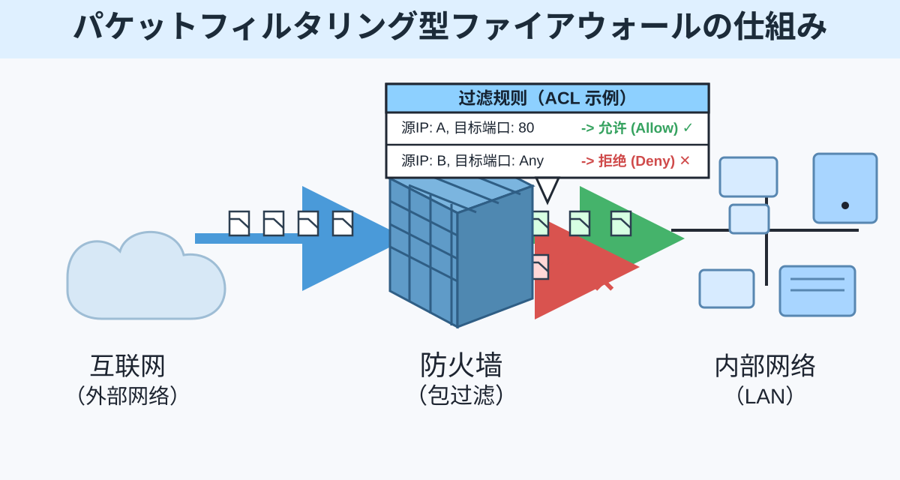
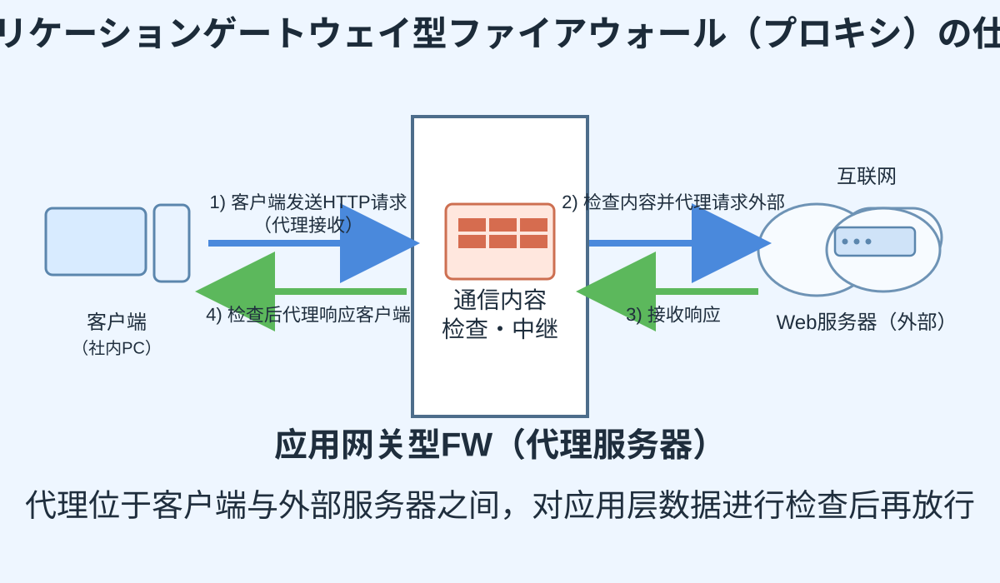
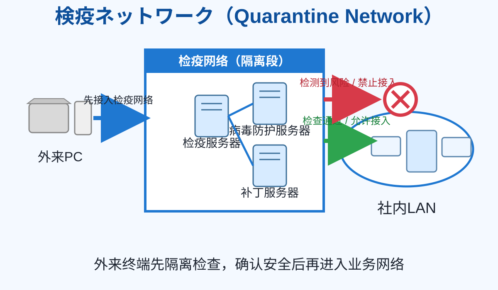

不正アクセス対策
本页集中整理防范外部不正访问的基础知识点。
不正アクセス対策知识点
防火墙（ファイアウォール）
防火墙用于阻止来自外部网络的不正当访问，通常部署在互联网（外部）与企业内网 LAN（内部）之间。
包过滤型防火墙（Packet Filtering）
主要检查数据包头部信息（如源/目的 IP、端口、协议等），通常不解析应用层载荷内容；常结合 ACL（白名单/黑名单）进行放行与阻断。

应用网关型防火墙（Application Gateway）
以代理方式对应用层协议与内容进行更细粒度检查，可按应用特征制定更严格访问控制策略。

DMZ（非武装地带）
DMZ（DeMilitarized Zone）是位于外部网络与内部网络之间、与两侧都进行逻辑隔离的网络区域。通常将对外公开服务（如 Web、邮件、DNS）放在 DMZ，以降低内网直接暴露风险。
- 直译常称“非武装地带”，强调其处于边界缓冲区的角色。
- 即使 DMZ 主机被攻陷，攻击者仍需突破额外边界控制才能进入内网。
WAF（Web Application Firewall）
WAF 是用于防护 Web 应用层漏洞攻击的防火墙，重点应对 SQL 注入、XSS、目录遍历等针对 HTTP/HTTPS 的攻击。
- 可视为应用网关型防火墙中的 Web 特化形态，专门针对 Web 通信流量做规则检测与拦截。
- 常部署在互联网与 Web 服务器之间，与网络层防火墙协同，形成分层防护。
False Positive / False Negative（误报与漏报）
False Positive（误报 / 假阳性）
安全系统把正常行为误判为攻击或威胁，导致不必要的告警或拦截。
False Negative（漏报 / 假阴性）
安全系统未能检测到真实攻击，把异常行为误判为正常，导致威胁绕过防护。
误报与漏报通常存在权衡关系（trade-off）：规则越严格通常可降低漏报但可能提升误报，规则越宽松则相反。
检疫网络（Quarantine Network）
检疫网络是用于检查外来终端（如带回公司的笔记本）是否感染恶意软件的专用隔离网络。终端先在检疫区完成病毒检查和补丁确认，合格后才允许接入内网。

IDS / IPS（入侵检测与入侵防御）
IDS（Intrusion Detection System）
IDS 用于检测不正入侵行为并发出告警，典型分类包括 HIDS（主机型 IDS）与 NIDS（网络型 IDS）。
IPS（Intrusion Prevention System）
IPS 在检测基础上进一步执行阻断/防御动作，可在攻击流量通过前或通过时实施拦截。
核心区别：IDS 侧重“发现与告警”，IPS 侧重“发现并防止”。实际部署中常与防火墙、WAF 联动形成多层防护。
UTM（Unified Threat Management）
UTM 指将多种安全功能整合到单一设备中的统一威胁管理机制，常见集成功能包括防火墙、IDS/IPS、VPN、反病毒、Web 过滤等，以降低部署和运维复杂度。
- 核心特点是“多功能一体化 + 统一策略管理”。
- 适合中小规模网络的集中防护场景，但需关注单点性能瓶颈与故障影响面。